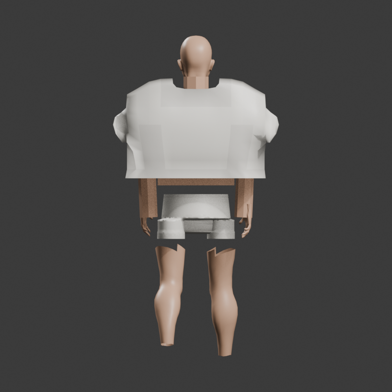
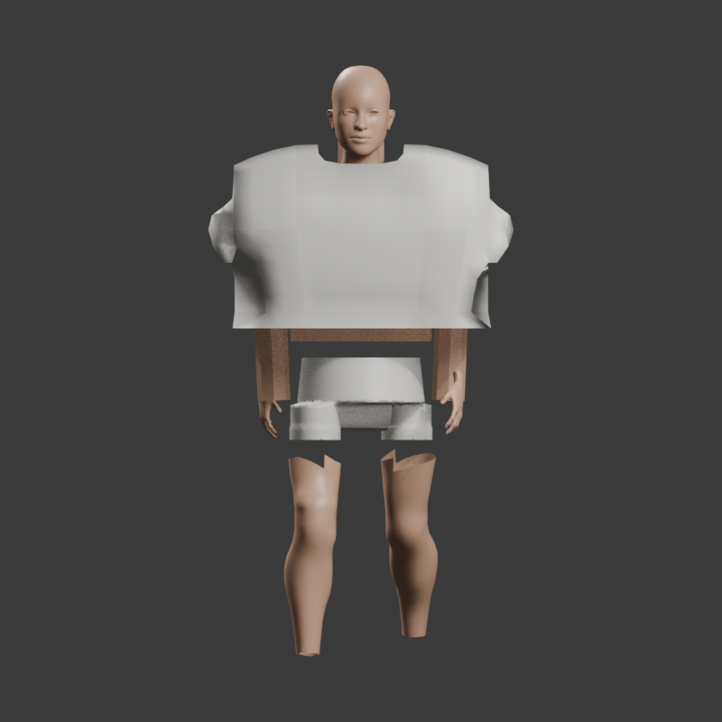
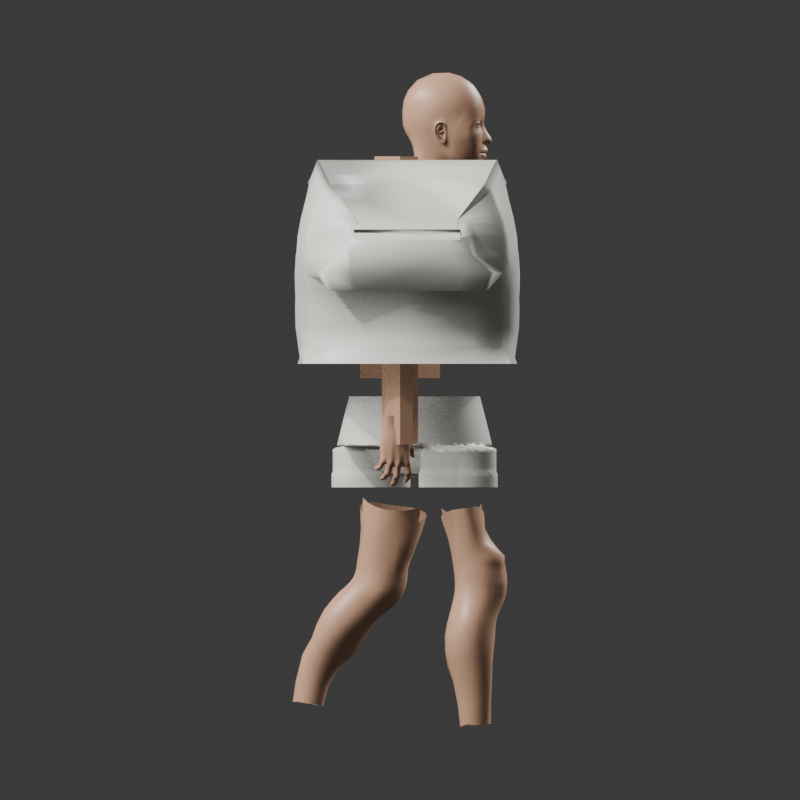
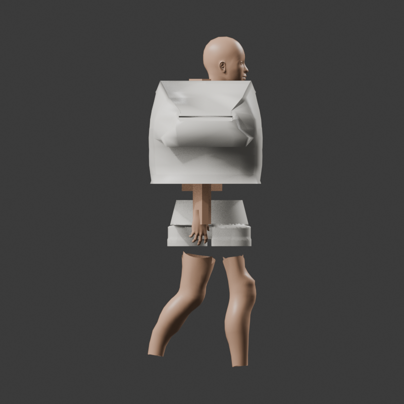
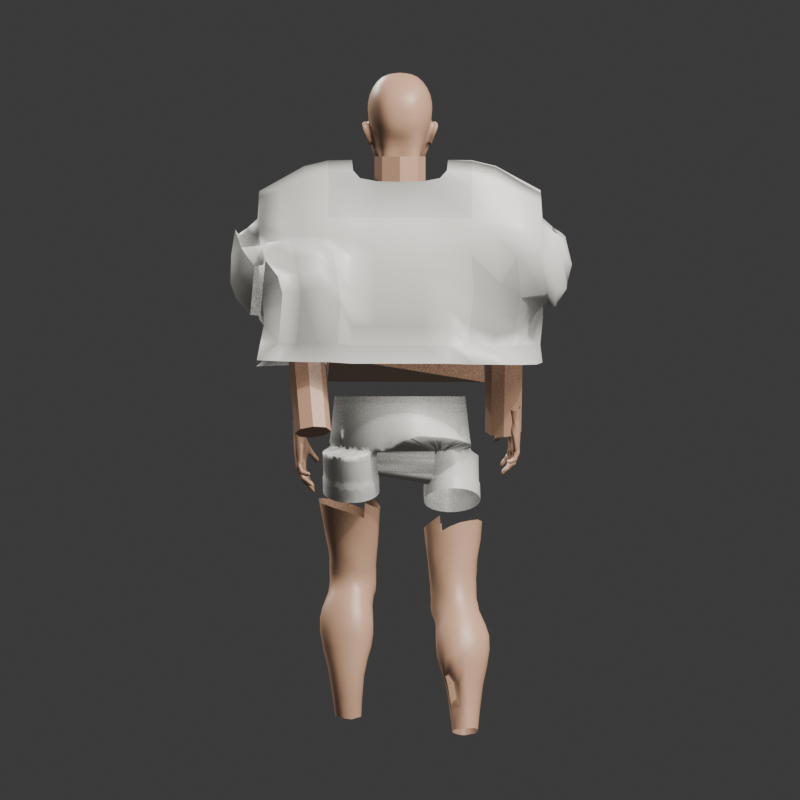
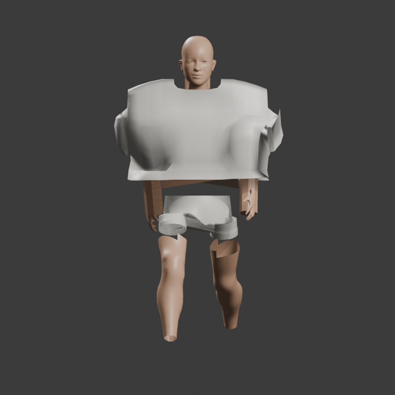

Phase 1L.5cq yoke-to-cap transition / normalized blend correction
Targeted offline walk proof only; no acceptance verdict.
Front
BEFORE 1L.5coAFTER 1L.5cq
Rear
BEFORE 1L.5co
AFTER 1L.5cq
Profile
BEFORE 1L.5co
AFTER 1L.5cq
WalkExtremeFront
BEFORE 1L.5coAFTER 1L.5cq
WalkExtremeRear
BEFORE 1L.5co
AFTER 1L.5cq